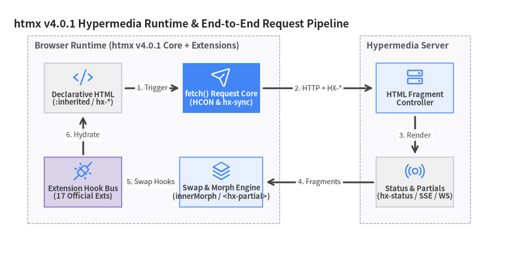
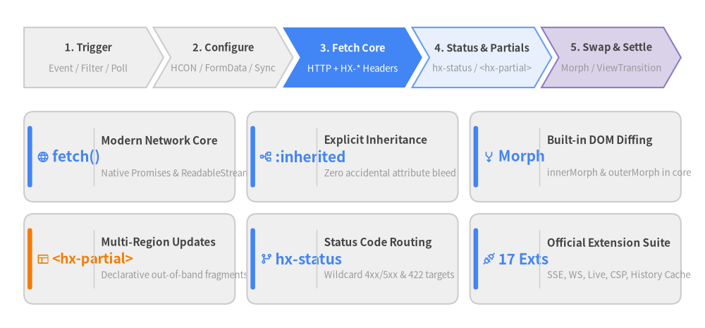

htmx v4.0.1 ユーザーガイド
htmx v4.0.1 の包括的なエンジニアリングガイドへようこそ。htmx v4 は、あらゆる HTML 要素から宣言的なマークアップだけで HTTP リクエストの発行・サーバーストリームの受信・DOM 状態のモーフィング更新を実現する、ゼロから再設計されたハイパーメディア指向 JavaScript ライブラリです。

Source Code
from drawlib import canvas
from drawlib.diagrams.architecture import ArchitectureDiagram, Node, NodeGroup, PhosphorIcon
from drawlib.styles import Styles
canvas.clear()
canvas.setup(width=184, height=96)
d = ArchitectureDiagram(
node_style=Styles.Primary,
node_text_style=Styles.DarkBold.patch(text_size=10.5),
edge_style=Styles.DarkBold,
edge_text_style=Styles.Dark.patch(text_size=10.0),
node_card_style=Styles.Neutral,
title="htmx v4.0.1 Hypermedia Runtime & End-to-End Request Pipeline",
)
browser = d.add(NodeGroup(title="Browser Runtime (htmx v4.0.1 Core + Extensions)", padding=6.0), xy=(6.0, 8.0))
dom = browser.add(
Node("Declarative HTML\n(:inherited / hx-*)", width=28, height=18, icon=PhosphorIcon.CODE, icon_size=7.5),
xy=(20.0, 52.0),
)
fetch_core = browser.add(
Node("fetch() Request Core\n(HCON & hx-sync)", width=28, height=18, icon=PhosphorIcon.PAPER_PLANE_TILT, icon_size=7.5, style=Styles.White, card_style=Styles.PrimaryFlat, text_style=Styles.WhiteBold.patch(text_size=10.5)),
xy=(70.0, 52.0),
)
morph_swap = browser.add(
Node("Swap & Morph Engine\n(innerMorph / <hx-partial>)", width=30, height=18, icon=PhosphorIcon.STACK, icon_size=7.5, card_style=Styles.PrimaryNeutral),
xy=(70.0, 18.0),
)
ext_bus = browser.add(
Node("Extension Hook Bus\n(17 Official Exts)", width=28, height=18, icon=PhosphorIcon.PLUGS_CONNECTED, icon_size=7.5, card_style=Styles.SecondaryNeutral),
xy=(20.0, 18.0),
)
server = d.add(NodeGroup(title="Hypermedia Server", padding=6.0), xy=(128.0, 8.0))
endpoint = server.add(
Node("HTML Fragment\nController", width=28, height=18, icon=PhosphorIcon.HARD_DRIVES, icon_size=7.5, card_style=Styles.PrimaryNeutral),
xy=(18.0, 52.0),
)
streams = server.add(
Node("Status & Partials\n(hx-status / SSE / WS)", width=28, height=18, icon=PhosphorIcon.BROADCAST, icon_size=7.5),
xy=(18.0, 18.0),
)
d.connect(dom, fetch_core, label="1. Trigger", padding=1.2)
d.connect(fetch_core, endpoint, label="2. HTTP + HX-*", padding=1.2)
d.connect(endpoint, streams, label="3. Render", padding=1.2)
d.connect(streams, morph_swap, label="4. Fragments", padding=1.2)
d.connect(morph_swap, ext_bus, label="5. Swap Hooks", arrow="<->", padding=1.2)
d.connect(ext_bus, dom, label="6. Hydrate", padding=1.2)
d.draw(xy=(4.0, 4.0))
canvas.save()
なぜ htmx v4.0.1 なのか？
htmx 4 は、htmx 2 までのレガシーな複雑さを一掃し、最新の Web プラットフォーム標準を中心にハイパーメディア駆動開発を再構築しました。JSON ペイロードをシリアライズしてクライアント側で重複した状態ストアを管理する代わりに、サーバーが HTML フラグメント（断片） を返し、htmx がそれをライブ DOM へとシームレスに統合します。
| アーキテクチャの柱 | htmx v4.0.1 の主要機能 | エンジニアリング上のメリット |
|---|---|---|
fetch() ネイティブコア |
XMLHttpRequest を廃し、fetch()・AbortSignal・ReadableStream を全面採用 |
ストリーミング応答（hx-multipart, hx-sse, hx-download）や柔軟なリクエスト制御を実現 |
明示的継承 (:inherited) |
親要素の属性は :inherited 修飾子（例: hx-target:inherited="#main"）を付けた場合のみ継承 |
深いコンポーネント階層における意図しない属性の漏洩（暗黙的継承バグ）を完全に防止 |
マルチリージョン <hx-partial> |
サーバー応答内の <hx-partial hx-target="..." hx-swap="..."> タグによる複数領域更新 |
1 回の HTTP ラウンドトリップで複数の独立した画面領域を明示的かつ安全に同時更新 |
| 組み込み DOM モーフィング | コアエンジンに innerMorph・outerMorph・outerSync スワップ戦略を標準搭載 |
外部ライブラリなしでフォーカス・スクロール位置・動画再生・CSS アニメーションを維持 |
| 宣言的ステータスルーティング | hx-status:422="target:#errors" やワイルドカード hx-status:5xx による分岐制御 |
バリデーションエラーやサーバー障害時のスワップ先・履歴制御を JS コードなしで宣言的に記述 |
| HCON 設定記法 | JSON と互換性を保ちつつ簡潔に書ける独自記法（defaultSwap:outerHTML, logAll:true） |
<meta name="htmx-config">・hx-vals・hx-headers・hx-config の記述量を大幅に削減 |
公式 17 拡張と htmax.js |
イベントフック型拡張 API（htmx.registerExtension）とオールインワン htmax.js |
hx-ext 属性の記述が不要になり、スクリプト読み込みとオプションのホワイトリストで完結 |

Source Code
from drawlib.canvas import save, setup
from drawlib.icons import phosphor
from drawlib.smartarts import ChevronProcess, KpiCards
from drawlib.styles import Styles
setup(width=176, height=82)
# Top: 5-Stage Request & Swap Pipeline (Bottom-Left at y=60)
pipeline = ChevronProcess(
style=Styles.Neutral,
text_style=Styles.DarkBold.patch(text_size=10.5),
description_style=Styles.Muted.patch(text_size=9.5),
corner_angle=60.0,
spacing=1.8,
flat_left_end=True,
)
pipeline.add("1. Trigger", description="Event / Filter / Poll")
pipeline.add("2. Configure", description="HCON / FormData / Sync")
pipeline.add(
"3. Fetch Core",
description="HTTP + HX-* Headers",
style=Styles.PrimaryFlat,
text_style=Styles.WhiteBold.patch(text_size=10.5),
description_style=Styles.White.patch(text_size=9.5),
)
pipeline.add("4. Status & Partials", description="hx-status / <hx-partial>", style=Styles.PrimaryNeutral)
pipeline.add("5. Swap & Settle", description="Morph / ViewTransition", style=Styles.SecondaryNeutral)
pipeline.draw(xy=(6.0, 60.0), width=164.0, height=15.0)
# Bottom: 2x3 KPI Grid of v4 Highlights (Bottom-Left at y=6)
kpi = KpiCards(
style=Styles.Neutral,
metric_style=Styles.PrimaryBold.patch(text_size=15.0),
text_style=Styles.DarkBold.patch(text_size=11.0),
description_style=Styles.Muted.patch(text_size=9.5),
accent_style=Styles.PrimaryFlat,
icon_style=Styles.PrimaryBold,
accent_position="left_pill",
metric_layout="left_column",
metric_width_ratio=0.30,
spacing=3.0,
)
kpi.add("fetch()", "Modern Network Core", "Native Promises & ReadableStream", icon=phosphor.globe)
kpi.add(":inherited", "Explicit Inheritance", "Zero accidental attribute bleed", icon=phosphor.tree_structure)
kpi.add("Morph", "Built-in DOM Diffing", "innerMorph & outerMorph in core", icon=phosphor.arrows_merge)
kpi.add(
"<hx-partial>",
"Multi-Region Updates",
"Declarative out-of-band fragments",
icon=phosphor.layout,
metric_style=Styles.AccentBold.patch(text_size=14.0),
accent_style=Styles.AccentFlat,
icon_style=Styles.AccentBold,
)
kpi.add("hx-status", "Status Code Routing", "Wildcard 4xx/5xx & 422 targets", icon=phosphor.git_Fork if hasattr(phosphor, "git_Fork") else phosphor.git_branch)
kpi.add("17 Exts", "Official Extension Suite", "SSE, WS, Live, CSP, History Cache", icon=phosphor.plugs)
kpi.draw(xy=(6.0, 6.0), width=164.0, height=48.0, columns=3, align="bottom_left")
save()
クイックプレビュー: 宣言的ハイパーメディアの実践
htmx v4.0.1 を使えば、フォーム送信・HTTP 422 バリデーションエラー表示・複数領域のバッジ同時更新といった典型的な UI ワークフローを、カスタム JavaScript を一切書かずに実装できます。
<!-- Client HTML: Explicit inheritance, declarative 422 routing, and loading indicator -->
<section hx-target:inherited="#contact-list" hx-indicator:inherited="#save-spinner">
<form hx-post="/contacts"
hx-swap="beforeend"
hx-status:422="target:#form-errors swap:innerHTML"
hx-disable="find button">
<input type="email" name="email" placeholder="engineer@example.com" required>
<div id="form-errors" class="error-banner"></div>
<button type="submit">Add Contact</button>
<span id="save-spinner" class="htmx-indicator">Saving...</span>
</form>
<ul id="contact-list">
<li id="contact-1">alice@example.com</li>
</ul>
</section>
サーバーが新しい連絡先を受理（HTTP 200 OK）すると、メインのリスト項目と、ナビゲーションバッジを同時に更新する <hx-partial> フラグメントを返します。
<!-- Server HTTP 200 Response: Main fragment + explicit <hx-partial> update -->
<li id="contact-2">engineer@example.com</li>
<hx-partial hx-target="#contacts-count" hx-swap="textContent">
2
</hx-partial>
ユーザーガイドの構成（全8章）
基礎概念から本番環境のセキュリティ・テスト手法まで、体系的に構成された全 8 章を通じて htmx v4.0.1 をマスターしましょう。
| 章 | テーマと主な解説内容 |
|---|---|
| 1. はじめに・導入と移行 | インストール（npm install htmx.org@4.0.1）、バンドル種別（htmx.js, htmx.esm.js, htmax.js）、ハイパーメディアの基本思想、HTTP メソッド属性（hx-get〜hx-query）、デフォルトトリガー、upgrade-check による htmx 2 からの移行手順。 |
| 2. ハイパーメディア設計 | ハイパーメディア駆動アプリケーション（HDA）設計、明示的継承（:inherited / :append と implicitInheritance）、HX-Request-Type: partial | full による応答切り替え、4 つの複数領域更新パターン（<hx-partial>, hx-swap-oob, HX-Trigger, ターゲット拡張）。 |
| 3. リクエストとトリガー | hx-trigger 修飾子（once, changed, delay, throttle, from, target, halt）、JS 条件フィルタ、intersect とポーリング、GET/DELETE のフォームデータ仕様と hx-include="closest form"、hx-vals と HCON（js:）、hx-headers、hx-config、hx-sync。 |
| 4. ターゲット指定とスワップ | 拡張相対 CSS セレクタ（this, closest, find, next, previous）、全 12 種のスワップ戦略（innerHTML, outerSync, textContent など）、組み込み DOM モーフィング（innerMorph, outerMorph, hx-morph-skip）、スワップ修飾子、hx-preserve、View Transitions API。 |
| 5. ヘッダー・イベント・ステータス | リクエストヘッダー（HX-Source, HX-Target の tag#id 形式）とレスポンスヘッダー（HX-Trigger, HX-Retarget, HX-Location）、宣言的 hx-status:XXX ルーティング、コロン区切りの htmx:phase:action イベント、detail.ctx、hx-on:*、非同期 htmx:confirm。 |
| 6. 公式拡張とストリーミング | htmx.registerExtension() のアーキテクチャと extensions ホワイトリスト、HTML ストリーミング（hx-sse, hx-ws, hx-multipart）、hx-live によるリアクティブ DOM スクリプティング（q(), .data, .aria, take(), toggle()）、UX 拡張群、htmax.js。 |
| 7. 履歴管理・キャッシュ・UX | hx-boost:inherited="true" によるプログレッシブエンハンスメント、履歴制御（hx-push-url, hx-replace-url, hx-history-elt, htmx.config.history）、hx-history-cache による sessionStorage 復元、ちらつきを防ぐ hx-indicator、hx-ptag 条件付きポーリング。 |
| 8. セキュリティ・テスト・デバッグ | ハイパーメディアの信頼境界（信頼できないコンテンツへの hx-ignore と hx-disable の違い）、厳格な CSP 対応（hx-csp, hx-nonce, safeEval, Trusted Types）、logAll や elt._htmx を使ったデバッグ、@web/test-runner・fetch-mock・Playwright による自動テスト。 |
関連ドキュメントポータル
本ユーザーガイドは、htmx v4.0.1 の 4 つの技術ドキュメントポータル群の Portal 1 です。
| ポータル | URL | 概要 |
|---|---|---|
| Portal 1: ユーザーガイド (本サイト) | https://htmx.drawlib.com/ |
実践的なチュートリアル、HDA 設計パターン、htmx 2 からの移行ガイド、機能別解説。 |
| Portal 2: API リファレンスカタログ | https://htmx.drawlib.com/api/ | 全 hx-* 属性、JS API メソッド、イベント、HTTP ヘッダー、設定オプション、公式拡張の完全仕様書。 |
| Portal 3: 内部アーキテクチャガイド | https://htmx.drawlib.com/architecture/ | src/htmx.js の内部構造解説（HCON パーサー、モーフィングアルゴリズム、タスクキュー、拡張ランタイム）。 |
| Portal 4: PNI501 診断レポート | https://htmx.drawlib.com/reports/pni501/ | コードベース品質メトリクス、テストカバレッジ分析、バンドルサイズ内訳、セキュリティ監査レポート。 |